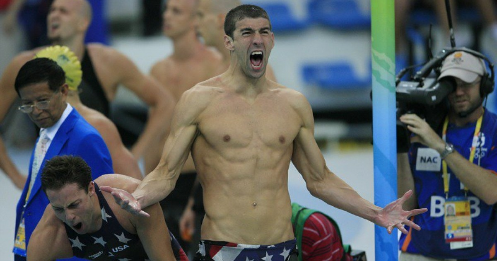
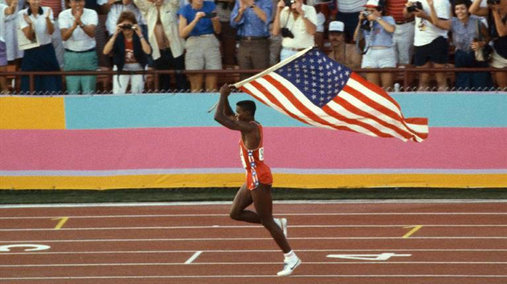
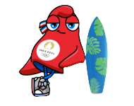
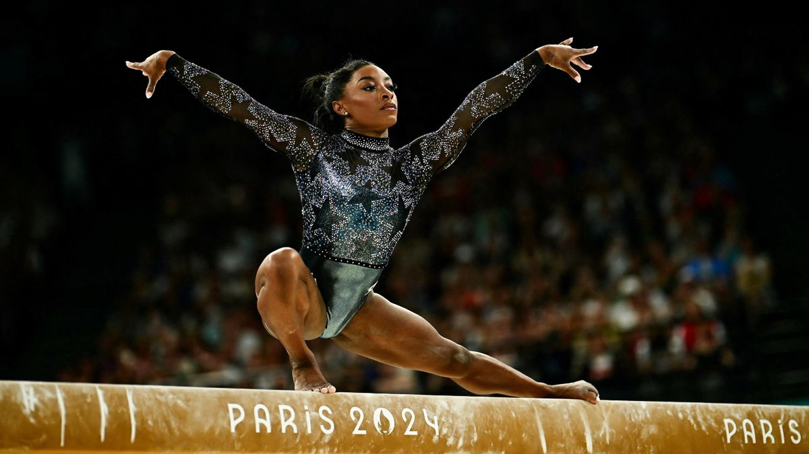
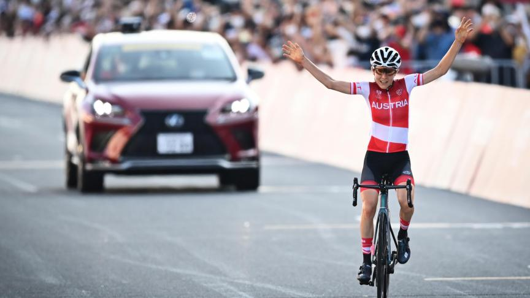
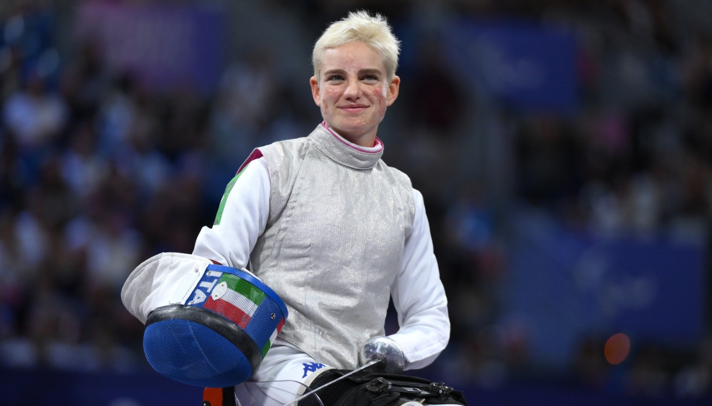

Présentation des JOs
Les Jeux Olympiques trouvent leurs origines dans la Grèce antique, il y a plus de 2 700 ans. Organisés en l’honneur de Zeus, ils se déroulaient à Olympie et rassemblaient les meilleurs athlètes du monde grec. Pendant près de 12 siècles, ces compétitions étaient un symbole d’unité et de paix entre les cités. Interrompus à la fin de l’Antiquité, les Jeux ont été relancés en 1896 grâce au visionnaire Pierre de Coubertin. La première édition moderne, tenue à Athènes, comptait 14 nations et 241 participants.

Depuis, les Jeux n’ont cessé de grandir, devenant un événement mondial qui rassemble des milliers d’athlètes et des milliards de spectateurs. Avec chaque édition, les Jeux Olympiques incarnent les valeurs d’excellence, d’amitié et de respect, tout en reflétant les évolutions sociales et culturelles de leur époque. De l’introduction des femmes en 1900 à l’accueil des Jeux Paralympiques en 1960, cet événement est bien plus qu’une compétition : c’est une célébration de l’humanité et de son potentiel.

Tableau des médailles
| Rang | Nation |  |
 |
 |
Total |
|---|---|---|---|---|---|
| 1 | États-Unis | 40 | 44 | 42 | 126 |
| 2 | Chine | 40 | 27 | 24 | 91 |
| 3 | Japon | 20 | 12 | 13 | 45 |
| 4 | Australie | 18 | 19 | 16 | 53 |
| 5 | France | 16 | 26 | 22 | 64 |
| 6 | Pays-Bas | 15 | 7 | 12 | 34 |
| 7 | Grande-Bretagne | 14 | 22 | 29 | 65 |
| 8 | Rép. de Corée | 13 | 9 | 10 | 32 |
| 9 | Italie | 12 | 13 | 15 | 40 |
| 10 | Allemagne | 12 | 13 | 8 | 33 |
Les Grands Moments des JOs

Les Grands Hommes

Le record imbattable de Michael Phelps (2008)
À Pékin, le nageur américain Michael Phelps a remporté 8 médailles d’or en une seule édition, battant le précédent record de 7 titres détenu par Mark Spitz.

Usain Bolt, la légende du sprint (2008)
À Pékin également, Usain Bolt établit un record mondial sur 100 m (9,69 s) en dominant la course avec une facilité déconcertante.

Le triomphe de Carl Lewis (1984)
Aux Jeux de Los Angeles, Carl Lewis remporte 4 médailles d’or en athlétisme, égalant l’exploit de Jesse Owens en 1936.

Les Grandes Femmes

Nadia Comaneci, la perfection (1976)
Aux Jeux de Montréal, la gymnaste roumaine Nadia Comaneci devient la première athlète à obtenir une note parfaite de 10, révolutionnant la gymnastique mondiale.

Simone Biles et ses 4 médailles d'or (2016)
Aux Jeux de Rio, la gymnaste américaine Simone Biles a démontré sa domination avec 4 médailles d'or et une de bronze, confirmant son statut de plus grande gymnaste de l’histoire.

L’exploit d’Anna Kiesenhofer (2021)
Lors des Jeux de Tokyo, l’Autrichienne Anna Kiesenhofer a surpris tout le monde en remportant l’or au cyclisme sur route, après avoir échappé au peloton dès les premiers kilomètres.

Les Grands Paralympique

Oscar Pistorius, un pionnier (2012)
L’athlète sud-africain Oscar Pistorius est devenu le premier double amputé à concourir aux Jeux Olympiques et Paralympiques, marquant une étape majeure pour l’inclusion.

Beatrice Vio, héroïne italienne (2016)
En escrime fauteuil, Beatrice Vio, amputée des quatre membres à cause d’une méningite, a remporté la médaille d’or à Rio. Elle incarne la résilience et l’excellence sportive.

Marie-Amélie Le Fur, l'exploit français (2016)
À Rio, Marie-Amélie Le Fur a décroché deux médailles d’or, établissant un record du monde au saut en longueur et une victoire sur 400 m en athlétisme.